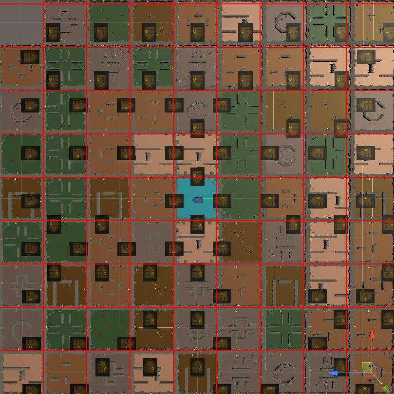
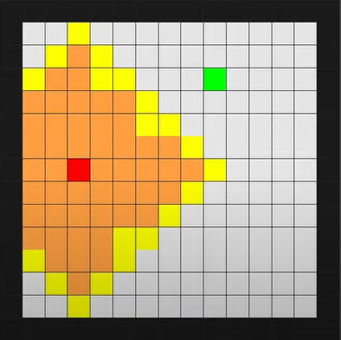
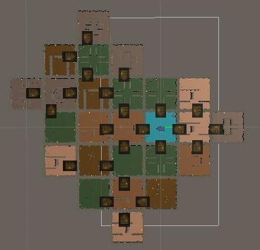
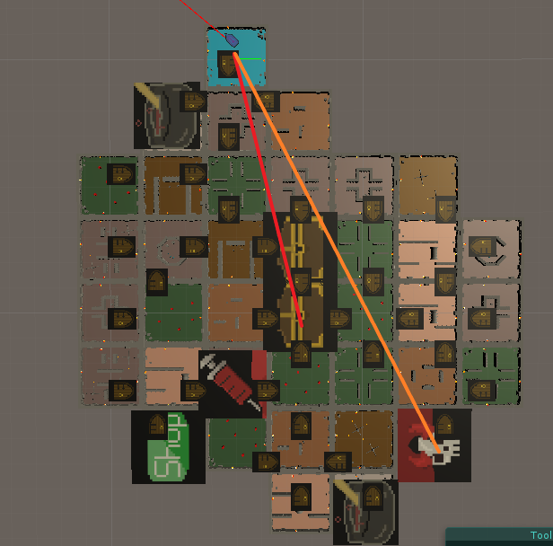

Procedural Generation
Procedural Generation
A breakdown on how I designed and developed procedural generation for Dungeon Catering
Features Overview

Setting the map
When starting to think about how to create procedural generation the first thing I thought about was figuring out where the rooms would be located, for this I used a 2D array to have as a representation of the map where the center of the array would be the center of the map
First generation
For the first generation I created a room on every direction from the beginning and then, checked the one that was closest and it created all possible rooms. After working on it, I realized I had found myself creating the exact same map over and over again. I later found out I had stumbled upon the basics for the dijkstra pathfinding algorithm and the star I created in my map was just what you can see on this algorithm.


Adding Randomness
Now that I was generating rooms, I needed to make a proper map, for this I started to select random locations in the array, checking if there was a room near it and, if so, create a room attached to this room. This created amazing maps, the only problem was that they were linear and had the problem that if the player didn’t choose the right path and checked “A” amount of rooms, they had to go back to the center and hope they selected the right path. This would make it that the player had the chance of forcibly exploring the entirety of the map before finding the final room, we didn’t want to force exploration but encourage it.

Improving map generation
I wanted a more dynamic map, one that would have many paths that could lead to the end but also that would encourage the player to explore. For this I got inspired by “The Binding of Isaac” where I could add special rooms with chests or mini-bosses, here the chest rooms, mimic rooms, cookirooms, shops and medic rooms came to life.
Since I wanted to encourage exploration I decided to move the spawn room to an edge of the map finding the distance from every room to the center, I would choose the furthest room from the center and make it the spawn room for the player. Then, the room that was furthest from this one would become the final room. After this happened I would access a dictionary of all the created rooms with their location, remove the spawn and final room from the array and select random rooms to make the special areas.
Finally, to add a more dynamic feel to the map, I would give a chance for any room to create a door to an adjacent room that wasn’t previously attached making it possible to have many paths that would lead to the final room.
Final thoughts
I know very well that this isn’t the best way of making procedural generation and that there are ways to make it way better, for me what makes this my best work isn’t the finalized product but the process. I learnt a lot and improved as a designer and as a programmer when working on this system. I pushed myself to work on something that ended up being key to replayability of the game, it was hard but really fun. Due to circumstances that were out of my hands, I unfortunately don’t have pictures of every single part of the process to show exactly how everything happened so I tried my best to replicate them with the final version.